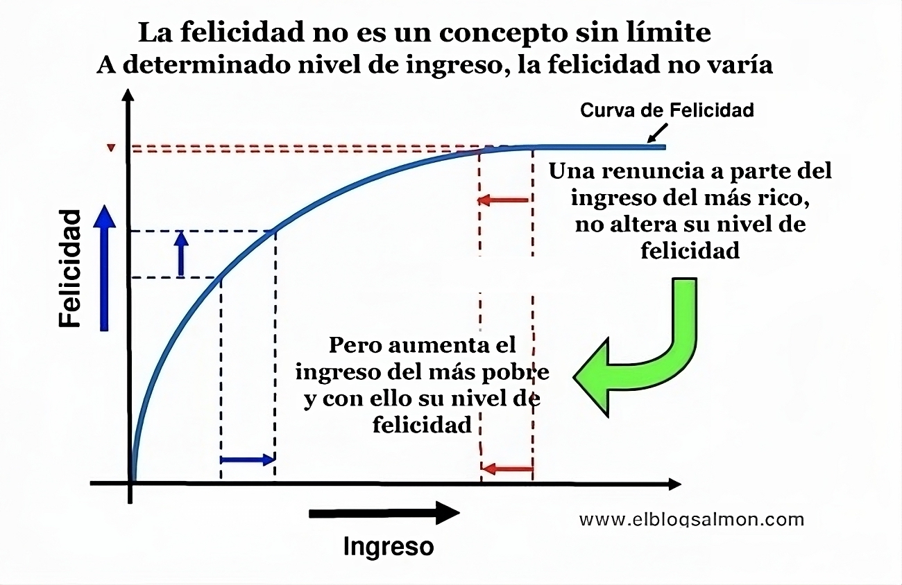

Cómo ser feliz, según la ciencia (y lo que nos hace infelices)
¿Alguna vez te has preguntado por qué, a pesar de todos nuestros esfuerzos, la felicidad a veces parece esquiva?
Laurie Santos, psicóloga de renombre y profesora en la Yale University, aborda esta intrigante pregunta en una de sus fascinantes TED Talks. Santos, conocida por su curso «La Ciencia del Bienestar» (uno de los más populares en Yale), explora los misterios de la felicidad a través de una lente científica. Busca desentrañar cómo nuestras mentes y comportamientos influyen en nuestra sensación de bienestar.
En esta entrada, quiero compartir contigo los principales hallazgos de las investigaciones de Santos, y cómo podemos aplicar estos descubrimientos para estar mejor y sentirnos más felices
Sesgos en humanos y monos
Santos ha llevado a cabo investigaciones que revelan paralelismos sorprendentes entre los comportamientos humanos y los de nuestros parientes primates, especialmente en lo que respecta a los sesgos económicos y la felicidad.
Los experimentos de Santos con monos capuchinos demostraron que, como nosotros, estos animales son susceptibles a sesgos económicos. Por ejemplo, los monos preferían no perder lo que ya tenían, incluso si podían ganar algo igual.
Este fenómeno, conocido en economía conductual como «aversión a la pérdida», es un tipo de sesgo cognitivo que nos conduce a valorar más el hecho de no perder antes que ganar. Según Oscar Pastillero Mimenza, del blog Psicología y Mente:
… la presencia de pérdidas genera una activación emocional mucho mayor que el que provoca una posible ganancia (concretamente alrededor de dos veces o dos veces y media más)
Este hallazgo es asombroso porque subraya una conexión evolutiva en nuestra forma de valorar lo que tenemos y lo que podríamos perder.
Otro aspecto intrigante de la investigación de Santos se relaciona con la comparación social. Los monos, al igual que los humanos, cambiaron su nivel de satisfacción no solo en función de lo que tenían, sino también en base a lo que otros a su alrededor poseían.
Esto resalta un punto crucial sobre la naturaleza humana – nuestra felicidad a menudo se ve influenciada por cómo nos comparamos con los demás, no solo por nuestras circunstancias objetivas.
Además de aportar a nuestra compresión de los animales, estos descubrimientos de Santos ofrecen una ventana hacia nuestros propios comportamientos y cómo podrían estar moldeando nuestra percepción de la felicidad.
¿Qué tanto de nuestra felicidad depende de nuestras comparaciones con los demás? ¿Cómo podemos gestionar estos sesgos para cultivar un bienestar más auténtico?
Salud mental en estudiantes universitarios
Otro tema crucial en la investigación de Santos es el impacto de la salud mental en estudiantes universitarios. Santos ha destacado cómo la presión académica y las comparaciones sociales afectan profundamente el bienestar de los jóvenes en entornos educativos.
Como docente, veo que muchos estudiantes luchan con la ansiedad y la depresión, exacerbadas por la constante necesidad de compararse con sus compañeros. Esto se alinea con las observaciones de Santos, que sugiere que estas comparaciones pueden disminuir nuestra satisfacción y felicidad.
Esta problemática es particularmente relevante en la era de las redes sociales, donde las comparaciones se han vuelto omnipresentes y a menudo distorsionadas. El uso excesivo de las redes sociales puede tener efectos deletéreos en los jóvenes, incluyendo ansiedad, comportamientos adictivos, alteraciones del sueño, y problemas de concentración y atención.
Varios estudios indican que el uso inadecuado de la tecnología puede y de hecho afecta el control de impulsos y la gratificación diferida en los jóvenes. Esto ha sido denominado cerebro TikTok. «Si ves TikTok por largos periodos de tiempo, eso puede provocar problemas de atención y concentración y afectar la memoria a corto plazo», afirma la Dra. Jessica Griffin, una investigadora de la University of Massachusetts Medical School.
Santos también aborda la importancia de estrategias proactivas para combatir estos desafíos. Sugiere enfocarse en prácticas que mejoren la conexión social y la gratitud, herramientas poderosas para contrarrestar los efectos negativos de la comparación y la competencia.
Esto me recuerda la importancia de cultivar relaciones significativas y apreciar las pequeñas alegrías de la vida cotidiana, en lugar de enfocarnos constantemente en logros externos.
Relación entre el dinero y la felicidad
En la charla de Laurie Santos, se destaca una perspectiva intrigante sobre el dinero y la felicidad. Santos cuestiona la creencia común de que más dinero conduce automáticamente a mayor felicidad. A través de sus estudios, ella ilustra cómo, después de alcanzar un punto de necesidades satisfechas, incrementos adicionales en la riqueza tienen un impacto marginal en nuestro bienestar.
Santos nos cuenta que existe un umbral de ingresos económicos que necesitamos alcanzar para ser felices. Una vez alcanzado este umbral, el ganar más dinero no incrementa significativamente nuestra sensación de bienestar. El siguiente gráfico, diseñado por el Premio Nobel Daniel Kahneman y presentado en El Blog Salmón, ilustra mejor este concepto:

Un aspecto fascinante de la investigación de Santos es la idea de que nuestra felicidad está más influenciada por cómo percibimos nuestras circunstancias financieras en relación con las de los demás, en lugar de por nuestra situación económica objetiva. Este fenómeno de «comparación social» sugiere que nuestra sensación de satisfacción puede depender más de nuestro entorno social y de con quién nos comparamos, que de la cantidad de dinero que tenemos en sí.
Estos hallazgos de Santos nos invitan a reflexionar sobre nuestra relación con el dinero y cómo lo valoramos en el contexto de nuestra felicidad. Nos recuerdan la importancia de centrarnos en lo que realmente aporta valor a nuestras vidas, más allá de la mera acumulación de riqueza.
Estrategias para mejorar el bienestar
Profundizando en las recomendaciones de Laurie Santos para mejorar el bienestar, nos encontramos con estrategias que pueden aplicarse en nuestra vida cotidiana. Una de las principales es fomentar la conexión social. Santos resalta la importancia de las relaciones personales y la interacción humana para nuestra felicidad. Esto me hace reflexionar sobre cómo, en la era digital, a menudo olvidamos el valor de las conexiones cara a cara y cómo estas pueden enriquecer nuestra vida.
Otra estrategia es la práctica de la gratitud. Santos sugiere que tomarse el tiempo para apreciar lo que tenemos puede tener un impacto significativo en nuestra percepción de la felicidad. Personalmente, he encontrado que llevar un diario de gratitud o simplemente dedicar unos momentos al día para reflexionar sobre las cosas buenas de la vida, puede ser un poderoso antídoto contra la insatisfacción y la negatividad.
Incorporando la comprensión de Santos sobre el dinero y la felicidad, es esencial reflexionar sobre cómo nuestras aspiraciones financieras se alinean con nuestro bienestar emocional. Considera evaluar tus metas económicas a la luz de tu felicidad y satisfacción personal, y no solo en términos de logros materiales. Este enfoque puede ayudarnos a equilibrar mejor nuestras necesidades económicas con el deseo de una vida plena y significativa.
Finalmente, Santos aboga por ajustar nuestras expectativas y percepciones. Muchas veces, nuestra infelicidad proviene de un desajuste entre nuestras expectativas y la realidad. Aprender a aceptar y encontrar alegría en lo que tenemos, en lugar de anhelar constantemente lo que no tenemos, puede ser clave para una vida más feliz. Para aplicar los hallazgos de las investigaciones de Santos a la práctica, considera incorporar pequeños cambios en tu rutina diaria:
- Fomentar conexiones reales: Dedica tiempo a interactuar cara a cara con amigos y familiares. Las pequeñas reuniones o las conversaciones significativas pueden fortalecer tus relaciones y, a su vez, tu felicidad.
- Practicar la gratitud: Empieza o termina tu día enumerando tres cosas por las que estás agradecido. Este simple hábito puede cambiar tu enfoque hacia lo positivo en tu vida.
- Evaluar la relación con el dinero: Reflexiona sobre cómo tu satisfacción personal se ve afectada por tus comparaciones financieras con otros. Esto podría implicar revaluar lo qué significa tener lo «suficiente» en términos económicos.
- Reajustar expectativas: Reflexiona sobre tus metas y expectativas. Siempre que sea posible, intenta apreciar lo que ya tienes en lugar de anhelar constantemente más. Implementar estos pasos puede ser un buen inicio para cultivar un mayor bienestar en tu vida, basándote en las investigaciones y recomendaciones de Santos.
Conclusiones
Las investigaciones de Laurie Santos nos dan valiosas lecciones sobre la felicidad y el bienestar. Aprendimos que, como los monos capuchinos en sus estudios, somos propensos a sesgos económicos y a la influencia de las comparaciones sociales. También vimos cómo las presiones académicas y las expectativas pueden afectar la salud mental de los estudiantes universitarios.
La exploración de la relación entre el dinero y la felicidad por Santos nos ofrece una perspectiva más amplia sobre el bienestar. Esta reflexión añade profundidad a nuestra comprensión de la felicidad, recordándonos que, aunque el dinero es una parte de nuestra vida, no debe ser el centro de nuestra búsqueda de la felicidad. Reconocer y equilibrar nuestras necesidades y deseos materiales con aspectos más significativos de la vida puede llevarnos a una satisfacción más auténtica y duradera.
Pero más importante aún, descubrimos estrategias prácticas para mejorar nuestro bienestar: fomentar conexiones reales, practicar la gratitud, evaluar nuestra relación con el dinero y reajustar nuestras expectativas.
Este viaje a través de la psicología de la felicidad nos invita a reflexionar sobre nuestras propias vidas y a tomar medidas conscientes para encontrar una mayor satisfacción y alegría. Al implementar estos pequeños cambios, podemos trabajar hacia una vida más plena y feliz.
La felicidad no es solo un destino, sino un viaje continuo de autoconocimiento y crecimiento.
Si te ha inspirado esta entrada y estás interesado en profundizar en conversaciones sobre bienestar y felicidad, te invito a unirte a nuestra comunidad en Discord. Es un espacio para compartir ideas, experiencias y consejos prácticos sobre cómo mejorar nuestra calidad de vida.